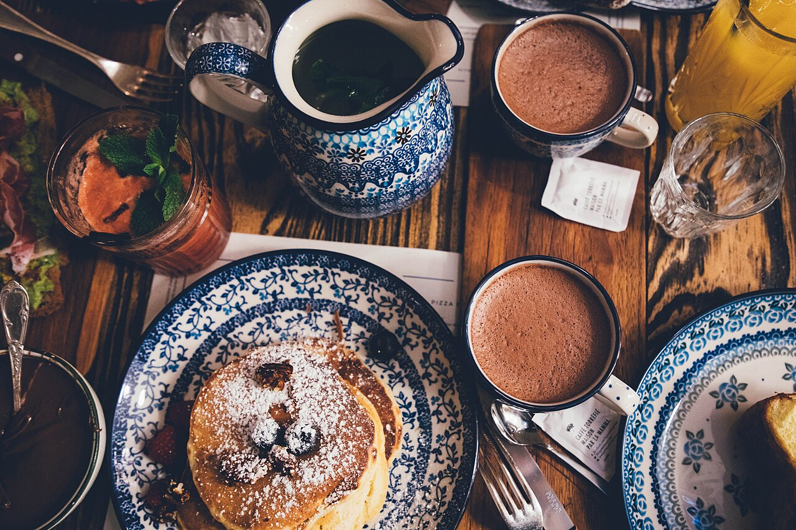

Objetivo do módulo
Ajustar a imagem para publicação: editar brilho, contraste, definição, saturação e corte; aplicar filtros e textos; e exportar no formato e tamanho corretos para cada meio.
Parte 1
Por que editar?
Editar não é “trapacear” — sempre fez parte da fotografia (no laboratório analógico já se controlava luz e contraste). Editar é finalizar a sua intenção: corrigir o que a câmera não captou perfeitamente e reforçar o clima que você imaginou. O segredo é a intencionalidade: cada ajuste deve ter um porquê.
Cuidado com o exagero: saturação demais, contraste estourado e filtros pesados “entregam” o amador. A melhor edição é aquela que ninguém percebe — só sente que a foto ficou boa.
Parte 2
Os ajustes básicos
Quase todo app de edição traz estes controles deslizantes (sliders). Entenda o que cada um faz:
Arraste os controles abaixo e veja a foto mudar ao vivo — exatamente como num app de edição. É a melhor forma de sentir o que cada ajuste faz.
 Pré-visualização ao vivo
Pré-visualização ao vivo
💡 Mexa pouco de cada vez e observe a imagem — não os números. Quente (☀️) deixa a foto aconchegante; frio (❄️) deixa mais sóbria.
| Ajuste | O que faz |
|---|---|
| Brilho / Exposição | Clareia ou escurece a imagem inteira. |
| Contraste | Aumenta ou reduz a diferença entre claros e escuros. Dá “punch” à foto. |
| Definição / Nitidez | Realça as bordas e os detalhes. Em excesso, cria ruído e artefatos. |
| Saturação / Vibração | Intensifica ou esvazia as cores. Vibração age mais nos tons fracos, preservando a pele. |
| Realces e sombras | Recuperam detalhe nas áreas muito claras (estouradas) ou muito escuras. |
| Temperatura | Esquenta (mais laranja) ou esfria (mais azul) a imagem — o balanço de branco na edição. |

Parte 3
O corte (recompor na edição)
O corte (crop) é uma segunda chance de compor. Com ele você pode aplicar a regra dos terços depois do clique, endireitar o horizonte, remover distrações nas bordas e mudar o formato da foto para a rede onde ela será publicada.
Cortar muito = jogar pixels fora. Se você corta só um pedacinho de uma foto, a imagem final fica pequena e perde qualidade. Por isso, componha bem na hora de fotografar e use o corte para ajustes finos.
Parte 4
Filtros
Filtros (ou presets) são combinações prontas de ajustes que dão um “clima” à foto com um toque. São ótimos para criar uma identidade visual consistente no seu perfil — todas as fotos com a mesma “pegada”. Use-os como ponto de partida e depois afine manualmente.


Parte 5
Inserir texto na imagem
Texto transforma a foto em peça de comunicação: posts, capas, divulgação, cartazes. E aqui o que você aprendeu no Módulo 1 volta: o posicionamento do texto também segue a regra dos terços.
- Contraste é tudo: texto claro sobre área escura (ou vice-versa). Se preciso, escureça uma faixa da foto atrás do texto.
- Respeite o “respiro”: não encoste o texto nas bordas; deixe margem.
- Hierarquia: um título grande, um apoio menor. No máximo duas fontes.
- Deixe a foto respirar: posicione o texto em áreas “vazias” da imagem, sem cobrir o assunto.
Parte 6 · técnico
Formatos, resolução e tamanho
Formatos de arquivo
| Formato | Quando usar |
|---|---|
| JPG / JPEG | O mais comum. Arquivo leve, ótimo para redes e web. Tem compressão (perde um pouco de qualidade). |
| PNG | Para imagens com áreas transparentes (logos, artes) e gráficos com texto. |
| RAW (DNG) | O “negativo digital”: guarda o máximo de informação para edição avançada. Arquivos grandes. Vários celulares já oferecem. |
Resolução, pixel e megapixel
A imagem digital é feita de pixels (pontos). Resolução é a quantidade de pixels (ex.: 4000 × 3000). Um megapixel = 1 milhão de pixels. Mais megapixels = mais detalhe e mais liberdade para cortar e ampliar — mas também arquivos maiores.
Na fotografia analógica, a imagem era formada por grãos do filme. Na digital, por pixels. São os “tijolinhos” que constroem a foto — só que de tecnologias diferentes.
Parte 7
Tamanhos ideais para cada rede
Cada rede social tem proporções que funcionam melhor. Exportar no formato certo evita cortes indesejados e perda de qualidade:
Já enquadre pensando no formato final: o que vai para Stories pede composição vertical; uma capa de vídeo pede horizontal.
| Uso | Proporção | Observação |
|---|---|---|
| Feed quadrado (Instagram) | 1:1 | Clássico, seguro |
| Feed vertical (Instagram) | 4:5 | Ocupa mais tela — ótimo alcance |
| Stories / Reels / TikTok | 9:16 | Tela cheia do celular |
| Capas e miniaturas (YouTube) | 16:9 | Formato de vídeo |
Parte 8
Backup e publicação
Foto perdida não volta. Crie o hábito de fazer backup:
- Use a nuvem (Google Fotos, iCloud, Google Drive) com backup automático.
- Mantenha uma segunda cópia (computador ou HD externo) das fotos importantes.
- Organize por pastas e datas — facilita montar o portfólio depois.
- Guarde sempre o arquivo original (sem edição) — você pode querer reeditar.
Na hora de publicar, lembre: cada rede recomprime a imagem. Exporte na melhor qualidade e no tamanho recomendado para que a foto chegue bonita ao público.
Parte 9 · ferramentas
Apps de edição recomendados
Snapseed
Gratuito e completo (Google). Ajustes locais, “pincel”, correções avançadas. Ótimo para aprender.
Lightroom Mobile
Padrão profissional. Edição por RAW, presets e controle fino de cor. Versão gratuita já resolve muito.
VSCO
Filmes/presets com estética “analógica” e bonita. Bom para criar identidade visual.
Canva
Para adicionar texto, montar posts e capas com modelos prontos.
Picsart
Recursos criativos, remoção de fundo, colagens e efeitos.
App nativo do celular
Não subestime! O editor da galeria já faz cortes e ajustes básicos muito bem.
Mesma foto, três intenções
Edição é finalizar a sua ideia. Vamos provar como uma única foto pode contar histórias diferentes dependendo do tratamento.
- Escolha uma das fotos que você fez na atividade do Módulo 2.
- Crie 3 versões: (a) natural e realista; (b) contrastada e vibrante; (c) preto e branco dramático.
- Em uma delas, insira um texto curto, posicionando-o pela regra dos terços.
- Exporte nos formatos 1:1, 4:5 e 9:16 e veja como o corte muda a composição.